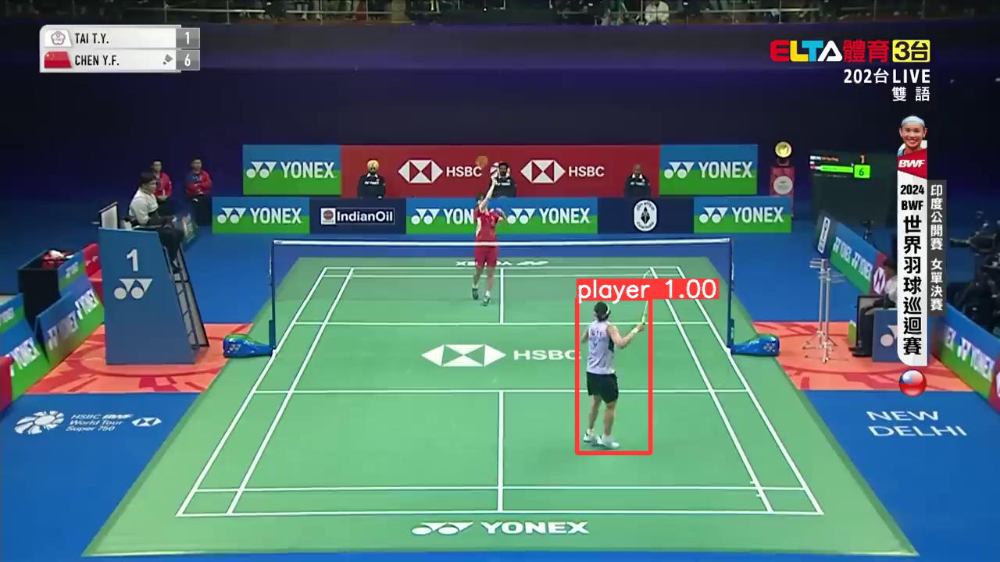
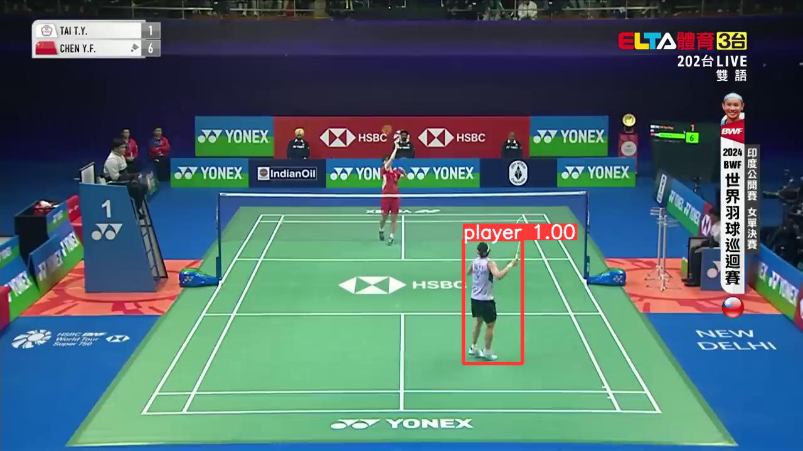

Side Projects
1. Stock Price Prediction System - LSTM 時間序列分析

Description：
使用 LSTM（長短期記憶）神經網路實現股價預測系統。透過深度學習技術分析歷史股價數據的時間序列模式， 建立能夠預測未來股價走勢的模型，為投資決策提供數據驅動的參考依據。
View Source Code2. Smart Trash Classification System - 深度學習方法


Description：
使用 TensorFlow 和 Keras 開發圖像分類模型，運用遷移學習技術結合預訓練的 InceptionV3 模型來準確分類垃圾。 此系統能夠自動識別不同類型的廢棄物，提升垃圾分類效率，促進環保回收作業的智慧化發展。
View Source Code3. YOLOv9 Object Detection - 羽毛球選手檢測系統
 

Description：
使用 YOLOv9-c 架構實現羽毛球運動中的選手檢測系統。該專案專注於在羽毛球比賽場景中準確識別和定位球員位置， 採用深度學習技術進行即時物件檢測。系統在包含 178 張羽毛球場景圖像的自定義數據集上進行訓練， 達到了 98.5% 的 mAP@0.5 檢測精度，適用於運動分析、戰術研究和訓練輔助應用。
View Source Code